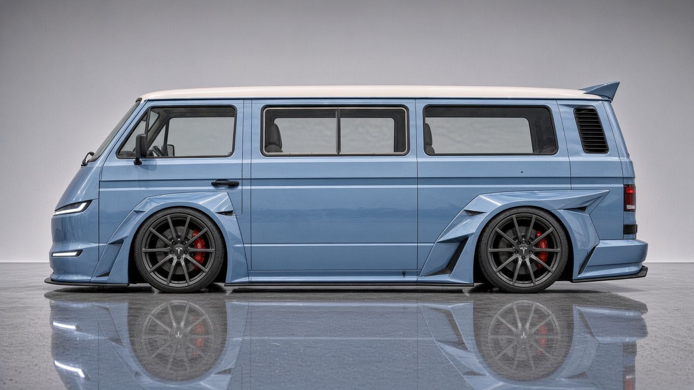
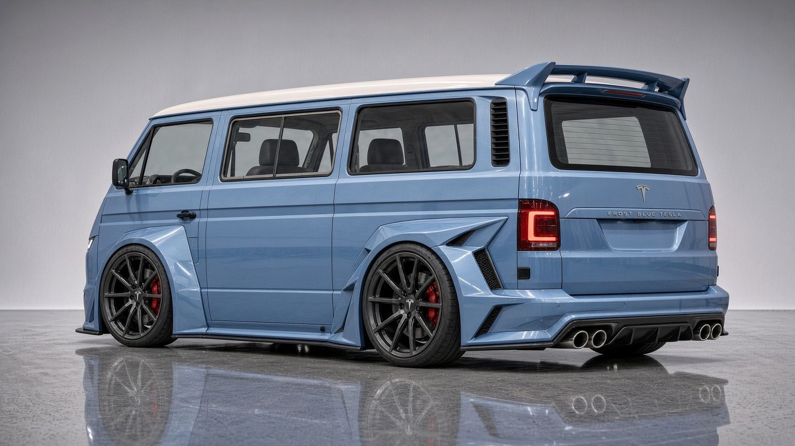
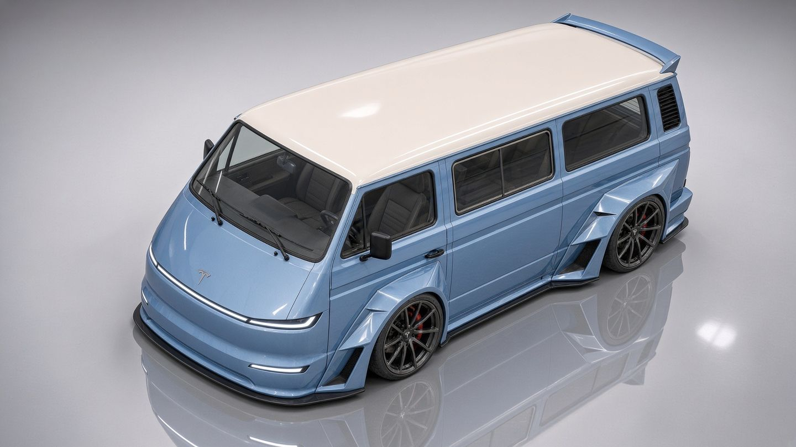

Plate IT3 / front three-quarter / pale blue over cream / concept render, not the van today
A build notebook · planning stage
FunAgain
Vincent's early 1983 air-cooled VW T3, converted to electric by hand. What the van needs, what gets measured first, and what is still open.
Van
Early 1983 US Vanagon (T3). Air-cooled Type 4 2.0, 091 4-speed manual, 2WD, coil-sprung semi-trailing-arm rear.
Where
Located in California. As a full EV it's smog-exempt; expect a one-time BAR referee visit to change the fuel type to electric.
Status
Planning only. Nothing gets bought.
The look
Four concept renders of the new body: wide-body T3, Tesla-style front, light bar, flares, a rear wing, pale blue with a cream roof.

Plate IIT3 / side elevation / flares front and rear, wing at the roof's edge

Plate IIIT3 / rear three-quarter / quad tips are a styling cue only; an EV has no exhaust

Plate IVT3 / from above / cream roof, light bar wrapping the nose
Section02
The plan
Electric first, done by hand, with a gas engine swap kept in reserve (a Subaru swap would face California smog rules). Everything here is planning: products and specs come from sourced research, and anything nobody could source is shown as open.
Main plan
EV first
An electric conversion is the main plan, decided on 2026-10-01. The planning doc builds it around a Nissan Leaf drive unit; which drive unit goes in is now being confirmed (see Drivetrain).
How
DIY
The mechanic measures the van. Caliper checks the numbers. Clay builds the CAD model. Volt (Embedded) owns the VCU and inverter firmware.
Backup
Subaru EJ swap
If the EV path doesn't work out, the fallback is a gas Subaru EJ engine swap, which has its own parts schedule. The Subaru swap would face California smog rules.
The QS138 90H hub motor is not for FunAgain. House rules for the research: no invented part numbers, every product, kit or spec has a source, and anything worked out by hand is labelled estimate or calc.
Probably none. Owner reports: “83.5 no PS”; PS first appeared on the 1984 Wolfsburg and was general from 1985. Look for a pump, reservoir or lines on the van. Open / to confirm
Leaf drive unit (current plan) vs Tesla drive unit (the look and the commercial-kit route).
Open / to confirmBeing confirmed. The planning doc's DIY path is built around a Nissan Leaf drive unit. Vincent now calls the build a Tesla swap. Until that's settled, both are laid out here and neither is final.
The Tesla-style nose in the renders is bodywork; which drive unit sits in the bay is a separate decision.
Current plan in the doc
Leaf drive unit
Nissan EM57 motor with its own reducer and differential.
Motor
EM57 (2013+). Max speed 10,500 rpm, or 11,330 rpm on the e+.
Splined tripod plunge stems (27 splines inboard, 2013–17). Not flanges.
Rotation
Forward is counterclockwise looking at the motor shaft. Reverse rpm is limited at the factory, so which way the unit faces is a real decision.
Weight
About 86 kg for the “drive tower” (forum) vs about 127 kg as shipped (Thunderstruck). The figures conflict; weigh the actual unit. Open / to confirm
Two ways to fit it
(a) Direct to the axles
Leaf reducer and diff, stub shafts to the VW 100 mm CVs. The 091 comes out.
No clutch, no shifting, no 091 to break. Regen and reverse come from the inverter.
Needs custom or low-volume stub shafts (BRAT/Fuel2Electric make them; listed out of stock). Stub dimensions unpublished. Open / to confirm
A mount cradle in the bay; Leaf mounts are 3-point (RH, LH, rear). Hole pattern unpublished. Open / to confirm
Axle length must match the 091's flange face-to-face, or the shafts change.
Park pawl via the Leaf actuator; the handbrake stays primary.
No documented Vanagon/T3 Leaf direct build found; a 1979 T2 example exists.
(b) Leaf motor to the 091
Leaf reducer discarded; adapter plate and coupler to the 091 input.
Existing VW axles, CVs and flanges stay; mount points are known.
A documented build exists: a 1980 Vanagon L Westfalia with a 2015 Leaf EM57 and the stock 091, rebuilt with Weddle parts.
Gears give low-speed torque multiplication.
The 091 sees motor torque; its input torque and speed limits aren't sourced. Open / to confirm
Kit fit to the air-cooled gas 091 bellhousing, and clutch or no clutch, both to be confirmed. Open / to confirm
Clutch and shifting stay; rebuild the 091 first.
The look and the commercial-kit route
Tesla drive unit
The way commercial T3 conversions do it.
ESDI EV
Their T3 conversion kit runs a Tesla rear unit “direct drive”, with no gearbox. esdi-ev.de
DreamEV
A 1982 Vanagon with a Tesla Model 3 rear unit. They skipped the VW transaxle because of “stories of people breaking the stock transmissions”. dreamev.com
Concept
Same as Leaf option (a): one unit straight to the axles, no clutch, no 091.
Mounts
EV West's universal mount is for the Tesla SDU; no Leaf drawings were found there.
Open / to confirm The planning sources hold no Tesla drive unit dimensions, weights, ratios, axle interface, mounting or controller details for a DIY install in this van. Those need sourcing before it can be compared like-for-like with the Leaf.
Side by side
Leaf (a): direct
Leaf (b): through the 091
Tesla rear unit
Gearbox
None; Leaf reducer 8.19:1
Stock 091 4-speed, rebuilt
None; direct drive (ESDI, DreamEV)
Axles / CVs
Stub shafts to VW 100 mm CVs; length check needed
Stock VW axles, CVs and flanges
Open / to confirm
Precedent
None found in a T3; a 1979 T2 cut-and-welded shafts
1980 Vanagon L Westfalia, documented
Commercial T3 kit (ESDI); DreamEV 1982 Vanagon
Hill-start torque
250 N·m × 8.19 ≈ 2,050 N·m at the axle before losses calc
Multiplied by the 091 gears
Open / to confirm
Biggest unknowns
Output face-to-face, stub dims, stack height, mount pattern
091 torque and rpm limits, bellhousing fit, clutch
Everything specific to this van
On the bench: Leaf EM57 numbers
From Caliper's drive-unit file. The only measured envelope comes from one owner tape-measuring a ZE1 (2018+) EM57 for the OSSEV MX-5e build, and it's the motor alone, without the reducer.
Motor only
320 wide × 317 tall × 310 deep mm. Shaft sticks out 55 mm; shaft centre to lowest point 134 mm.
ZE1 inverter
Sits on top: 350 wide, 103 tall plus 13 mm of locating studs, depth 375 mm; power tabs stick out 56 mm. Can be unbolted and mounted remotely.
Stator
ø200 mm, 8 poles, 48 slots.
Full stack
Gearbox + motor + inverter + PDM: a forum “approximate guesstimate” of W 530 × H 820 × L 500 mm. That height has to clear the engine lid and the bay floor. Gen3 PDM about 210 mm tall without its cover.
Mass
Motor about 55 kg (remembered, not weighed) or 58 kg (Wikipedia). PDM about 20–22 kg (estimate). Whole-unit figures conflict, see above.
27 inboard, 29 outboard (2013–17 aftermarket axle data). Motor shaft is 20-spline, a rolled, proprietary spline.
Motor to reducer
6 bolts at 60 N·m. Thread conflicts: M10×1.25 (Hemmings) vs M10×1.5 (Inductive Autoworks). Settle with a thread gauge. Open / to confirm
Mounts
3-point: RH, LH and rear. The RH parts are the same 2013–2025; the LH bracket changed for 2018+.
Not yet known
No public source was found for these. They close with a tape, calipers and a scale on a real unit, or from CAD.
Overall L × W × H of motor + reducer, with and without the inverter. Open / to confirm
Mass of the reducer alone. Open / to confirm
Mount hole locations, bolt sizes and patterns on the case. Open / to confirm
Distance between the left and right output faces, and the fore/aft offset of the diff centre from the motor axis (clocking). Open / to confirm
Side-gear spline major diameter and module, and whether 27 splines applies to 2018+ (ZE1). Open / to confirm
The two inner axle stems: probably different lengths, dimensions unknown. Open / to confirm
BRAT stub shaft length and flange seat position. Open / to confirm
Whether BRAT's “about the same spacing as the original VW transaxle” holds for a Vanagon. That claim came from a Golf/Cabriolet install. Open / to confirm
OEM axle seal size; only BRAT's replacement size (36 × 56 × 10 mm) is known. Open / to confirm
Whether direction can be swapped in software at full rpm, which decides how the unit is clocked. Open / to confirm
The decision rests on
Leaf output face-to-face.
Stack height vs bay height.
Whether BRAT stubs or a custom equivalent can be had.
The 091's condition.
Plus the measuring sheet below. Option (b) has the closest documented precedent; option (a) is simpler to drive and is how commercial T3 kits do it, but with Tesla units.
Section04
Systems the EV needs
Take the engine out of an air-cooled T3 and several things go with it: brake vacuum, cabin heat, the alternator. Six systems replace them.
4.1 · no engine vacuum
Brakes
Keep the stock booster and master; add an electric vacuum pump.
Use a stand-alone-rated pump (Hella UP5.0, UP30 or UP5X class), not the UP28, as the only vacuum source. Hella calls the UP28 a “support” pump.
Mount it near the front, close to the booster; the long rear-to-front vacuum line goes away.
Key-on 12 V through a dedicated fuse and a relay driven by the vacuum switch.
Failsafe: reservoir and check valve give several assisted stops with the pump dead; add a low-vacuum warning light. Brakes still work unassisted, with a heavy pedal; test that on a closed lot.
pump → check valve → reservoir 0.5 L+ → booster
Later upgrade: a Bosch iBooster (Tesla/Honda donors), silent and with no vacuum plumbing, but fab-heavy at the front.
Pump model and fuse size Open / to confirm
Mounting space behind the front panel Open / to confirm
iBooster bracket and pedal feel for this van Open / to confirm
4.2 · a safety item in NM winters
Heat and defrost
One or two PTC air units at the front for defrost and primary heat.
The air-cooled T3 has no heater core. Heat came from the exhaust heat exchangers, so with the engine gone there is no heat and no defrost air.
Closest drop-in: a 400 V PTC brick with fan and 60 mm outlet, 1,100 W each, made for air-cooled VW/Porsche ducting (220–400 V packs only). Two give 2,200 W.
Optional range saver: a diesel air heater (Webasto Air Top 2000 STC, 0.9–2.0 kW) that uses no pack energy. Good for camping and morning warm-up.
Fallback: an HV coolant heater with an added heater core and blower box. Most work, most heat.
Do the 60 mm outlets fit Vanagon ducts? Open / to confirm
Early '83 front blower and duct layout; trace the ducts Open / to confirm
4.3 · replaces the alternator
12 V DC-DC
A DC-DC converter holds the 12 V bus at about 13.8–14.4 V. Keep a 12 V aux battery.
Leaf PDM (comes with the donor): charger plus DC-DC; the 12 V side “can be loaded to 1.5 kW max”. Liquid cooled; it shuts off in minutes if run dry.
Or stand-alone: Thunderstruck TSM-HV DCDC, 280–450 V in, 13.8 V out, 1,500 W continuous.
Worst case, everything on: about 45–90 A (600–1,200 W) calc. The stock alternator was 65 A / 770 W (1980 sheet).
The aux battery runs the VCU, BMS and contactors at wake-up and buffers pump and fan surges.
key-on → precharge → HV contactors → DC-DC enable → 12 V bus
PDM continuous 12 V rating; treat 1.5 kW as a peak Open / to confirm
DC-DC output fuse rating Open / to confirm
Does the DC-DC run while charging? (a decision)
4.4 · the van has no radiator
Coolant loop
Inverter, motor and PDM/charger need coolant; a rear-mounted radiator may avoid pipes to the nose.
Early air-cooled vans have no radiator and no front-to-rear pipes.
The heat load is small next to an engine, so a radiator and fan in or near the bay may do.
The Leaf pump is 12 V, 2-pin, with about an 8 s start delay. The PDM has a marked inlet and needs flow.
pump → PDM → inverter → motor → radiator → expansion tank
Radiator size and coolant temperature limits; no Nissan figure sourced Open / to confirm
Leaf OEM pump current draw Open / to confirm
4.5 · location, weight, mounting
HV battery
Under the floor between the rails, or inside the cabin in the OEM case.
A Leaf 24 kWh (2013) pack is about 294 kg, about 1,570 × 1,188 × 265 mm, 360 V nominal (secondary source; verify).
Under-floor keeps the cabin and lowers the centre of gravity; ground clearance and the fuel-tank area need measuring. In-cabin is simplest but eats floor space.
Precedents: the 1980 Vanagon kept its pack in the OEM case on the floor inside; DreamEV built an aluminium tray under the van.
The Leaf pack has internal contactors. Keep the Leaf service disconnect.
Pack generation: 24, 30 or 40 kWh Open / to confirm
Net weight change and GVWR margin, until parts are weighed Open / to confirm
HVIL wiring and fuse ratings Open / to confirm
4.6 · J1772 AC
Charging
J1772 (Type 1) AC through the Leaf PDM's on-board charger.
The PDM includes a 3.3 or 6.6 kW charger and handles CP/PP from the real Leaf inlet.
“You cannot wire in AC directly.”
The PDM wakes on the J1772 plug.
DC fast charge is out of scope for now; the Leaf DC inlet type isn't sourced Open / to confirm
Also on the list
VCU. The Leaf inverter needs a VCU over CAN; Volt owns the firmware. Hookups: throttle pedal, brake switch, key/start, direction selector, contactor and precharge drives, pump and fan relays, DC-DC enable, vacuum-pump fault input, gauge outputs.
Contactors and precharge. Main +/− and precharge; VCU sequencing is ZombieVerter-supported.
HVIL. How the Leaf interlock is wired in a conversion isn't known; ask Volt. At minimum: covers on all HV terminals, orange cable, service disconnect reachable. Open / to confirm
Gauges. Speedo (cable from the left front wheel, believed unaffected; confirm), SOC, motor/inverter temperature, 12 V voltage, vacuum warning.
Park lock. The stock rear-drum cable handbrake stays primary.
Power steering. Likely none on an early '83. If found, it must be deleted or replaced with an electric pump. Open / to confirm
A/C. Delete if fitted (the compressor was belt driven).
Fuel system. Remove the tank, or keep a small one only for a diesel heater.
Pedal. No throttle cable: an electronic pedal to the VCU. Type to be chosen by Volt. Open / to confirm
Section05
Measuring phase
Nothing gets designed until the van is measured. This is the sheet, merged with Caliper's open items. It is laid out to print.
All numbers in mm unless notedPhotograph each one with the tape in frameL = driver side · R = passenger side
Tools
Setup and safety
Park on the level floor. Tyres at normal pressure. Record the load (fuel level, Westy gear in or out). Chock the front wheels. Trans in neutral; handbrake off only when the rear is on stands.
Ride height, on its wheels, bounced and settled: wheel-arch lip height above the floor at the axle centreline, L and R; and axle-bore centre to arch lip.
Full droop: jack under the body jacking points or frame (not the trailing arm), set stands under the frame and let the rear wheels hang. The shock is the travel limit, so droop = shock fully extended.Never work under the van on the jack alone.
Full bump: on stands, raise the trailing arm with the jack under the spring seat area until the bump stop just touches. Stop when the stand starts to unload. If the van lifts off the stands first, don't force it: record the bump-stop gap at ride height and calculate bump, or follow the shop manual's procedure. Open / to confirmSpring removal stores energy. Only with the manual's procedure and proper tools.
Wheels can stay on, but taking one off gives better access to the outer CV flange. Re-torque the lugs before lowering.
Axle and CV, L and R at each position
#
Measurement
Ride
Droop
Bump
A1
Outer (wheel-side) CV flange face to face, L to R, across the van (string or two plumb bobs to floor marks, then tape)
A2
Inner CV flange face to face, L to R (091 output flange faces)
A3
Axle shaft angle vs horizontal, L / R
A4
Axle sweep fore/aft (outer flange ahead of or behind the inner?), L / R
A5
Outer flange centre height above the floor, L / R
A6
Inner flange centre height above the floor, L / R
—
—
A forum guideline puts total CV angle under about 22.5° for normal use (combined angle = vertical + ½ sweep); Caliper should confirm. A1 minus 2× the axle length gives the target inner face-to-face for option (a).
CV flange details
Also record
Trailing arms
#
Measurement
L
R
T1
Inner pivot bolt centre height above the floor (ride height)
T2
Outer pivot bolt centre height above the floor
T3
Inner pivot bolt centre: fore/aft from the rear axle centreline
T4
Outer pivot bolt centre: fore/aft from the rear axle centreline
T5
Inner and outer pivot centres: distance from the van centreline
T6
Pivot bolt diameter
T7
Spring seat centre height (ride); shock lower mount height (ride / droop / bump)
T8
Bump-stop gap at ride height
Mark the rear axle centreline on the floor (plumb from each hub centre, chalk line between) and the van centreline. Measure everything from those two lines and the floor.
Bay box (engine out preferred)
#
Measurement
Value
B1
Bay floor (or lowest frame/crossmember) to engine-lid opening
B2
Shop floor to lid opening; floor to lowest bay structure
B3
Firewall to rear valance, at floor level and lid level
B4
Narrowest width between the frame rails (and where)
B5
Width at lid opening
B6
Lid opening size, L × W
B7
Intrusions (tank, heater ducts, shift rod, brake/fuel lines): position and size
Existing mounts
#
Item
Fore/aft
Height
Lateral
Bolt
M1
Engine rear mount(s) / crossmember
M2
Transaxle front (nose) mount
M3
Transaxle side mounts (if any)
M4
091 input shaft centre (bellhousing face)
M5
Shift rod path and rear coupler
Section06
Build sequence
In order. Each step waits on the one before it.
01
Measure
Kailee, the mechanic
Fill in the measuring sheet with photos. Engine out is better if it's coming out anyway.
02
Caliper verifies
Caliper, specs
Check the measurements against sources, close the CV-angle check, and compute target axle lengths for options (a) and (b).
03
Clay models
Clay, CAD
Bay, arms and axles from the measurements, with the drive unit envelope dropped in. Check lid clearance, axle angles and mount locations.
04
Pick the drivetrain
From the model
Decided from the model, the 091's condition and stub availability. Leaf vs Tesla is still being confirmed.
05
Volt does controls
Volt, embedded
Define the VCU inputs and outputs. Then choose pack location, vacuum pump and heater.
06
Priced parts list
Last
A sourced, priced parts list is written at this stage. It isn't on this site, and nothing is bought without approval.
Section07
Open questions
What has to be answered before parts are chosen. Most close on the measuring day; some need Volt.
Leaf drive unit or Tesla drive unit?
Being confirmed with Vincent.
Leaf output face-to-face, with and without BRAT-type stubs; the stub dimensions.
Caliper
Full stack height (motor + reducer + inverter ± PDM) vs bay height B1. If too tall, move the inverter or PDM remotely, as done on T2 builds.
Measure, then Clay
Will the BRAT Leaf-motor kit bolt to an air-cooled gas 091 bellhousing? Clutch or no clutch?
Vendor
091 condition and input torque and rpm limits. Rebuild before EV torque if option (b).
Mechanic
Drive unit clocking and the reverse-rpm limit: can direction be swapped in software at full rpm?
Volt
Pack: which generation (24, 30 or 40 kWh), in-cabin OEM case or under-floor tray? GVWR margin?
After measuring
Brakes: which stand-alone vacuum pump, and is there mounting space behind the front panel? Or iBooster?
Mechanic
Heat and defrost: can Vanagon ducts take the 60 mm PTC outlets? Is there a front blower on an early '83?
Trace the ducts
The Leaf PDM's continuous DC-DC rating, and whether a separate DC-DC is needed.
Research
Coolant temperature limits and radiator size for the Leaf inverter, motor and PDM.